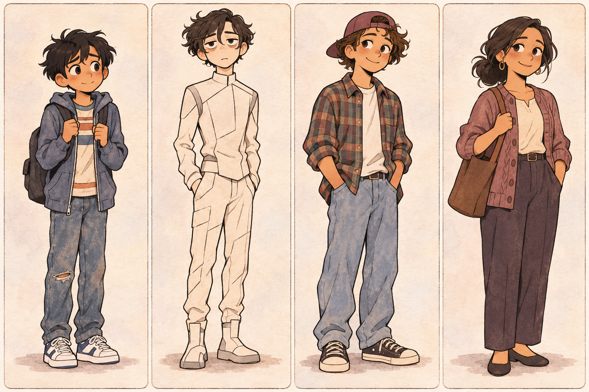

← Reader인물·장소 리소스 시트

삽화 제작 전 검토용 기준입니다. 제공된 캐릭터 시트에서 실사 다큐멘터리 사진의 그림체만 참조합니다. 특정 인물·배경·소품 지시는 가져오지 않습니다.
Michael Rosario
12세 소년, 필리핀계로 보이는 외모. Fox Run에서 어머니와 살며 Jordans와 Y2K 비축물을 아낍니다.
Ridge Sabio
미래에서 온 16세 학생. 흰색 홀로드립, EGG, sumbook. 1999년 감기로 창백하고 지친 상태.
Gibby
16세 베이비시터. 갈색 눈, 딸기 향, 조용하고 신중한 태도.
Ms. Rosario
Michael의 어머니. 여러 일을 하며 지친 얼굴. 평소 포니테일, Mosley의 죽음을 알리는 날에는 풀린 머리.
Mr. Mosley
Fox Run 관리인. 갈색의 햇볕에 그을리고 주름진 얼굴, Fox Run이 수놓인 작업용 페인트 옷.
Places & objects
Rosario apartment: 작은 부엌 조리대·소파·침대·물 얼룩 천장. Beejee’s apartment: 소파와 복도. Fox Run–Mink 교차로: Ridge의 재물질화 장소. EGG: 엄지 지문으로 작동하는 손 장치. Sumbook: 제목 없는 작은 미래 기록 책.
Illustration gate
이 기준표를 검토한 뒤 장면을 최대한 촘촘히 나눕니다. 각 장면은 3×3, 행 우선 9칸으로 제작하고 인물·장소 상태를 이 시트와 대조합니다.